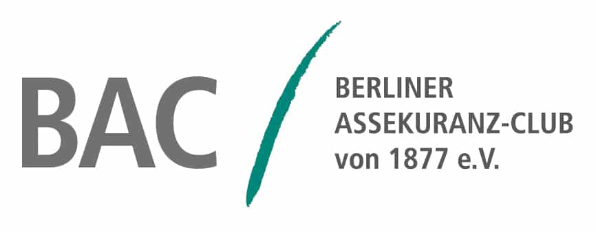

You have policies from your home country, but in Germany you repeatedly face rejections or inquiries. Are they still of any use?w
With customized solutions, I ensure your peace of mind as you navigate the global market – no matter where your career takes you.
With customized solutions, I ensure your peace of mind as you navigate the global market – no matter where your career takes you.
With customized solutions, I ensure your peace of mind as you navigate the global market – no matter where your career takes you.
Living or working abroad can be challenging. You might wonder how to best protect yourself and your belongings. Contracts often seem complex, and with so many diverse experiences out there, you may feel unsure if you've truly covered everything. Even if your contracts look good, you can't be sure they offer the same protection overseas.
Imagine having the freedom to pursue your goals and craft your projects with ease because you can count on reliable coverage. International insurance questions become a thing of the past, allowing you to focus on what truly matters: your personal growth and successful projects — no matter where you are!
You have policies from your home country, but in Germany you repeatedly face rejections or inquiries. Are they still of any use?w
You are aiming for self-employment abroad, but you do not know which insurances apply there and how to properly secure yourself.
Are you unsure whether you should take out private or public insurance? You want to know which system best suits your life situation.
How extensive should your coverage be? You lack an overview of what private liability insurance really provides and why you need it.
In the first step, you schedule a personal consultation with me. I'll provide you with the space to ask your questions and describe your situation. This sets the foundation for offering you a customized and understandable solution.
I review the contracts you currently have and consider any unique circumstances relevant to you. My focus is on international aspects, potential gaps, and specific risks. This approach ensures a clear understanding of your current coverage.
Based on my analysis, I develop a proposal that matches your lifestyle and professional projects. I place great importance on clarity and create a concept that offers you comprehensive protection.
I stay by your side to regularly check if your coverage still aligns with your situation. If changes arise, I continuously adjust the concept to keep you updated.
Don't rely on partial solutions. Your life and your ambitions deserve the best protection. Let me help you discover how you can feel fully secure.
It's all about your money and your future. Both are important to me. I am convinced that with your personal financial planning concept, you can enjoy financial freedom at every stage of life. At Havel Spree Finanz, led by myself, Sebastian Krcger, individuals and businesses have been relying on my services since 1996. I have developed unique solutions that exceed market standards and are tailored to each client's needs.
In all other areas, we work together to choose the optimal insurance solutions available, ensuring that your specific needs are met through carefully negotiated enhancements. Your finance, security, and sustainability are my priorities, and I take the time to listen to you. Sustainability is important to us, and I plan to achieve certification by the first half of 2022.
Through my memberships with the Society for Insurance Studies e.V. and the Berlin Insurance Club of 1877 e.V., I maintain a strong connection with the academic hub in Berlin.
Dolziger Strasse 51
10247 Berlin
Monday - Friday
9am - 6pm
Insurance matters often come down to details that might not be immediately apparent to you. As the expert at Havel Spree Finanz, I take the time to understand your individual situation—whether you've lived in Germany for a while, just arrived, or are pursuing your goals abroad. This way, you can identify potential gaps and find tailored solutions. Many of my customers are digital nomads or independent freelancers with different needs compared to conventional employees. If you frequently change residences or travel internationally, you need a flexible German worldwide insurance coverage. I explain the crucial contract terms clearly and show you how to protect yourself from unnecessary risks. With my years of experience, I anticipate emerging questions or pitfalls. I believe that with personal consultation, you make the best decisions because you can trust your own lifestyle choices, not generic solutions.
As a digital nomad, you enjoy the freedom to work from almost anywhere globally. However, this flexibility also comes with specific needs. Often, an international health insurance for digital nomads/freelancers is essential, as it should provide coverage in different countries. Professional liability for digital nomads can be crucial if you freelance for various clients and your workplace isn't fixed. Travel insurance for creatives or freelancers aids occasional projects in other countries, ensuring you're well-protected in case of illness or accident. I work with you to identify any potential gaps and which insurance options best support your digital lifestyle. Then develop a clear guideline to protect you from significant financial risks while maintaining your independence.
Many of my clients lead lives spread across borders, whether for professional projects, family matters, or creative endeavors. If you regularly change your domicile, the question arises of how your insurance coverage for Germans worldwide can remain stable. I suggest a combination of basic and country-specific policies to ensure comprehensive coverage. For instance, health insurance for Germans abroad may be necessary if you live outside Germany for extended periods. If you have a permanent residence in Germany but work a lot abroad, international health and liability configurations might be suitable. The challenge is to consider different countries' regulations so that you're neither over- nor underinsured. I verify which conditions apply to you, for instance, if you move to a non-EU country, ensuring the contracts are flexible enough to adapt to future changes. This way, your protection remains valid long-term without needing to start anew each time.
Thinking of relocating your life to another country means considering emigrant pension insurance early on. Not every pension agreement made in Germany transfers smoothly abroad. I first evaluate the country you're moving to, the bilateral agreements in place, and how they affect your contribution periods. Then I assess whether it makes more sense to keep an existing policy or if other options, like private pension models, are more attractive. Some emigration destinations offer special incentives or tax benefits. At the same time, you should consider that certain benefits taken for granted in Germany might be limited abroad. I understand that planning your retirement is a sensitive issue, and I take the time to explain different options, ensuring solutions secure your standard of living beyond country boundaries. Ultimately, it's about having peace and financial stability, no matter where you live later on.
Organizing events globally can bring unexpected surprises: sudden weather changes, unforeseen delivery delays, or legal specifics in foreign countries. Here, stable protection is essential. I ensure that insurance for global event organizers covers not only classic liability but also unique risks. Often, an event insurance for cultural projects is recommended to mitigate financial losses from event cancellations or damages to rented venues. A travel insurance for creatives can be wise when your teams cross borders. It's crucial to stay mindful of regulations and permits while ensuring contract clarity in multiple languages. I help you identify the most prevalent risks and how they can be strategically insured. Whether in Berlin, Buenos Aires, or Bangkok—you should focus on your event without risking financial setbacks in emergencies. This way, you can unleash your creativity and provide an unforgettable experience for your guests.
You might spend hours or days working on a piece you want to present in galleries, at fairs, or your exhibitions. Various things need consideration: liability insurance for art exhibitions protects you if visitors accidentally cause damage or get injured. If you require broader protection, bundled insurances for exhibitions and events may be worth considering. They ensure temporary installations, transport routes, and dismantling are comprehensively insured. If you operate globally, I support you with insurance for international artists, ensuring cross-border safety. Your artworks' significance and the emotional and financial values involved are understood. Therefore, step-by-step, I review potential risks with you and how we can minimize them. Solutions give you peace of mind to focus on your creative work without worrying about unexpected incidents that might happen.
When you arrive in Germany, many questions arise: Who covers medical treatments? Which medical services are covered, and what are the differences between public and private policies? Here, a well-structured health insurance for expats in Germany is crucial. Not every policy from your home country is recognized in Germany. I explain the options available in the local healthcare system and the requirements you need to meet. Moreover, I check if you can choose a private or public policy or if a temporary solution is advisable. If you're only staying in Germany for a limited time, it affects what insurances you're eligible to sign. I'll show you what to watch for, such as pre-existing conditions or deductibles. My goal is to inform you optimally, ensuring you feel secure if you require medical assistance, enabling you to enjoy your daily life in Germany stress-free.
Life does not always go as planned, and an unexpected illness or accident can drastically impact your ability to work. Hence, a disability insurance for EU and non-EU citizens is often sensible if you live or work in Germany. However, eligibility requirements vary based on your country of origin and the duration of your stay. Especially if your profession is creative or physically demanding, this protection can become invaluable. I explain the necessary documentation and what to consider in the insurance terms. A thorough health assessment is typically included to evaluate the risk and determine fair conditions for you. If you live here temporarily, an international variant that remains valid after you return might be advisable. I emphasize understanding key terms and clauses, ensuring that you’re comprehensively protected and able to maintain your standard of living should the need arise.
I understand many of my clients are globally dispersed and may not be able to appear in person in Berlin. That's why I offer flexible consultation options, such as video calls or phone, enabling you to clarify your insurance questions without needing to travel. I send digital documents and guide you step-by-step through all crucial details. Whether it's an international freelancer insurance or expatriate health insurance in Germany, you receive a comprehensive overview of your options. Following the consultation, I create a clear concept, which you can conveniently review digitally. You can then complete the contract digitally. Modern tools offer a secure signature, so you're not reliant on in-person appointments. Of course, I also offer traditional mail services if you prefer paper. My aim is to demonstrate that distance doesn't have to be an obstacle to receiving top-notch advice.
Experience shows that life plans change faster today than in the past. Maybe you discover a new career opportunity abroad, become a freelancer for international projects, or return to your home country. In all these cases, I prioritize evaluating if your insurance situation can be adjusted accordingly. I examine if you need a global digital nomad health insurance or if you should add additional components as a remote worker. Also, for artists working on projects in other countries, risks can shift. Together, I tackle this with you, learning your new situation, and adjust the concept to ensure you can approach your life worry-free. This way, you're not stuck with outdated policies but are well-prepared for every step. I ensure that you can rely on my support now and in the future—no matter where life takes you.
Don't rely on half solutions. Your life, your art, and your projects deserve the best protection. Allow me to help you discover how you can feel completely secure.
 |